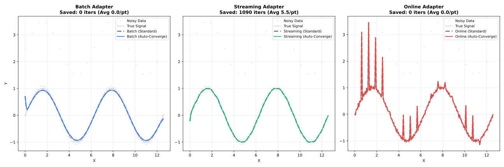

Execution Modes
Choose the right adapter for your use case.
Overview
Choose the first row below whose condition applies:
| Condition | Adapter |
|---|---|
Data too large to fit in memory |
|
Fits in memory, need real-time/incremental updates |
|
Fits in memory, no real-time requirement |
|
| Mode | Use Case | Memory | Features |
|---|---|---|---|
Batch ( |
Complete datasets |
Full |
All features |
Streaming ( |
Large files (>100K) |
Chunked |
Residuals, robustness |
Online ( |
Real-time sensors |
Fixed window |
Incremental updates |

Feature Comparison
| Feature | Batch | Streaming | Online |
|---|---|---|---|
Confidence intervals |
✓ |
✗ |
✗ |
Prediction intervals |
✓ |
✗ |
✗ |
Cross-validation |
✓ |
✗ |
✗ |
Diagnostics |
✓ |
✓ |
✗ |
Residuals |
✓ |
✓ |
✓ |
Robustness weights |
✓ |
✓ |
✓ |
Parallel execution |
✓ |
✓ |
✗ |
Next Steps
-
API Reference — All configuration options